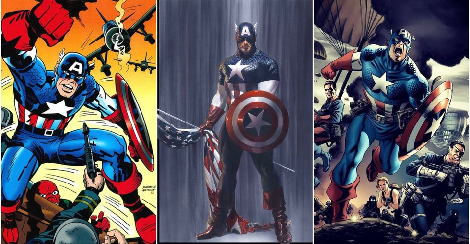
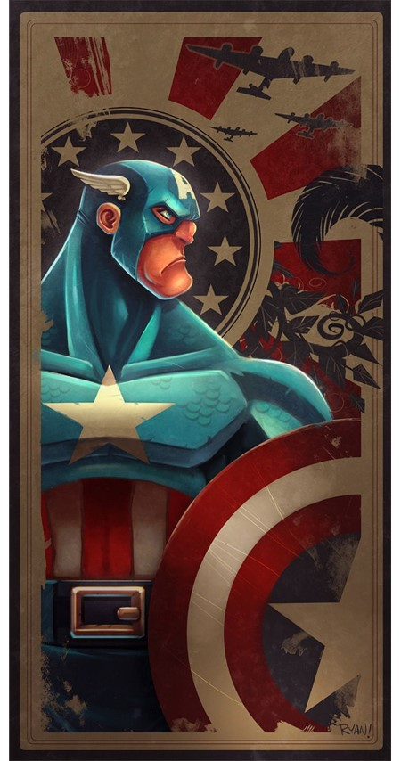

CAPTAIN AMERICA [ STEVE ROGERS ]
Author: Dibyarup Nath
Category: Marvel Comics.
Canon Character
"For as long as I can remember, I just wanted to do what was right. I guess I'm not quite sure what that is anymore. And I thought I could throw myself back in: follow orders, serve. It's just not the same."

HEIGHT
6'2"
[Post Super Soldier Serum]
WEIGHT
109 Kg
EYE COLOUR
Blue
DATE OF BIRTH
July 4, 1918
Captain America is a World War II veteran and a successful test subject of the Super-Soldier Serum. After a mission to stop a plane-drone from dropping a bomb, he and his partner Bucky fell into the Arctic waters, Bucky presumed dead and Cap being frozen solid. Sixty years in the future he was discovered by the Avengers and broke out of his icy coffin. He slowly got used to his new environment and became the leader of the Avengers and America's symbol of justice.

POWERS AND ABILITIES
• Parkour and Agility
• Enhanced Physical Condition
• Telepathic Defenses
• Genius Level Intellect
• Bravery and Willpower
• Leadership
• Excellent Strategist
• Stealth
• A Skilled Pilot
• Chi Manipulation
• Adept at wielding virtually any Weapon
• Proficient in Driving Any Kind of Vehicle
• Master Martial Artist
WEAKNESSES
• Reliant on his shield: If someone was to get rid of it, he could be defeated by an opponent of similar strength and skill, which can be easily done, as his only method of ranged attacks is throwing it.
• The shield can be destroyed: Although it could only be done by cosmic beings and gods
• Uniform has unarmored spots: Such as his chin, mouth and eyes
BACKGROUND
Born July 4th in 1920, Steven Grant Rogers was the child of poor Irish immigrants, Sarah and Joseph Rogers. He had a frail youth, however, a strong sense of duty and honour. Soon, however, his father died and when he grew up to his teens, his mother died of pneumonia. When World War II broke out, Steve was alone. And seeing how the Nazis were destroying Europe made him feel like he needed to do something. When he tried to attend the military, though, he was rejected due to his frail body and sickly nature. Hearing about the boy's attempt, general Chester Phillips decided to talk to him about the experiment known as Project Rebirth.
Steve accepted the offer and after weeks of tests, he was finally administered with the Super-Soldier Serum. His body and mind grew much more powerful and he was deemed as successful. He was given the legendary white, blue and red costume alongside the disc-shaped shield made of Vibranium.
Several years later, Steve was discovered by the superhero team named Avengers. When they put him on a table, discussing what they should do with him, he bursted out of the block of ice. Confused and scared, he soon met Nick Fury, the leader of S.H.I.E.L.D. Fury reminded Rogers of his WWII past and after some time of getting used to the modern times, he was accepted as the leader of the Avengers.